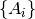
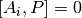
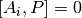
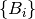
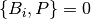
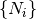
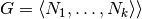
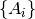

Constraint Solvers¶
Commutation Constraints¶
- qecc.solve_commutation_constraints(commutation_constraints=[], anticommutation_constraints=[], search_in_gens=None, search_in_set=None)¶
Given commutation constraints on a Pauli operator, yields an iterator onto all solutions of those constraints.
Parameters: - commutation_constraints – A list of operators  such
that each solution
 yielded by this function must satisfy
 for all
yielded by this function must satisfy
 for all  .
. - commutation_constraints – A list of operators  such
that each solution yielded by this function must satisfy
 for all .
- search_in_gens – A list of operators  that generate
the group in which to search for solutions. If None, defaults to
the elementary generators of the pc.Pauli group on
 qubits, where
is given by the length of the commutation and anticommutation
constraints.
qubits, where
is given by the length of the commutation and anticommutation
constraints. - search_in_set – An iterable of operators to which the search for satisfying assignments is restricted. This differs from search_in_gens in that it specifies the entire set, not a generating set. When this parameter is specified, a brute-force search is executed. Use only when the search set is small, and cannot be expressed using its generating set.
Returns: An iterator it such that list(it) contains all operators within the group  given by search_in_gens, consistent with the commutation and anticommutation constraints.
This function is based on finding the generators of the centralizer groups of each commutation constraint, and is thus faster than a predicate-based search over the entire group of interest. The resulting iterator can be used in conjunction with other filters, however.
>>> import qecc as q >>> list(q.solve_commutation_constraints(q.PauliList('XXI', 'IZZ', 'IYI'), q.PauliList('YIY'))) [i^0 XII, i^0 IIZ, i^0 YYX, i^0 ZYY] >>> from itertools import ifilter >>> list(ifilter(lambda P: P.wt <= 2, q.solve_commutation_constraints(q.PauliList('XXI', 'IZZ', 'IYI'), q.PauliList('YIY')))) [i^0 XII, i^0 IIZ]
- commutation_constraints – A list of operators  such
that each solution